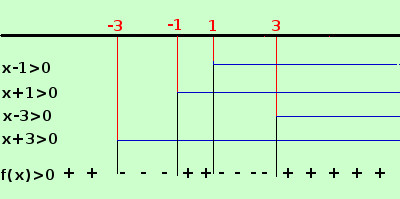

|
y = log(x4 - 10x2 + 9) devo porre l'argomento del logaritmo maggiore di zero x4 - 10x2 + 9 > 0 Devo trovare i valori dove la funzione e' positiva Per trovarli devo scomporrre il polinomio associato in fattori e studiare il segno del prodotto dei vari fattori trovati E' un trinomio x4 - 10x2 + 9; se sostituisco x2 con y ottengo un polinomio di secondo grado y2 - 10y + 9 ora posso scomporre come trinomio notevole: Devo trovare due numeri la cui somma sia -10 ed il prodotto sia +9: essi sono -1 e -9 quindi posso scrivere y2 - 10y + 9 = (y - 1)(y - 9) = al posto di y sostituisco x2 x4 - 10x2 + 9 = (x2 - 1)(x2 - 9) = ora scompongo come differenza di due quadrati ed ottengo = (x - 1)(x + 1)(x - 3)(x + 3) Ora pongo ogni fattore maggiore di zero e indico con una linea continua gli intervalli in cui il fattore e' positivo  per x < -3 i quattro fattori sono negativi e quindi il loro prodotto e' positivo, cioe' la funzione f(x) e' positiva per -3 < x < -1abbiamo tre fattori negativi ed uno positivo, quindi il loro prodotto f(x) e' negativo per -1 < x < 1 abbiamo due fattori negativi e due positivi, quindi il loro prodotto f(x) e' positivo per 1 <x < 3abbiamo tre fattori positivi ed uno negativo, quindi il loro prodotto f(x) e' negativo per x > 3 i quattro fattori sono positivi e quindi il loro prodotto f(x) e' positivo ottengo che la funzione e' positiva negli intervalli x < -3 ∪ -1 < x < 1 ∪ x > 3 quindi scrivo il campo di esistenza C.E. = { x ∈ R / x < -3 ∪ -1 < x < 1 ∪ x > 3 } Nota: Da notare che questi esercizi concettualmente sono semplici, il difficile e' utilizzare le conoscenze gia' acquisite nei precedenti anni di studio; se si trovano difficolta' occorre riprendere gli argomenti degli anni precedenti e ripassarli |